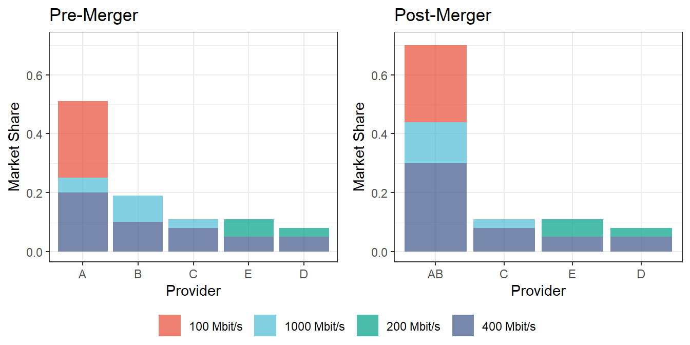
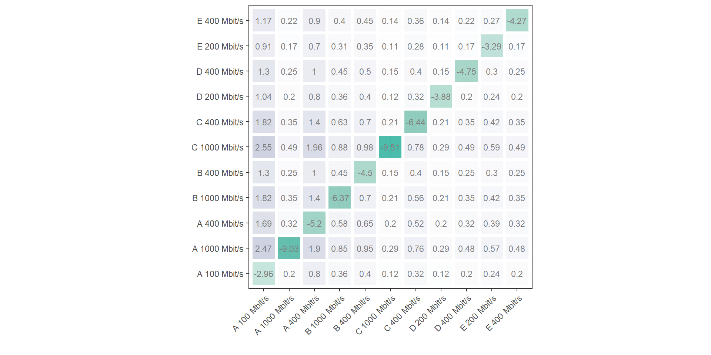
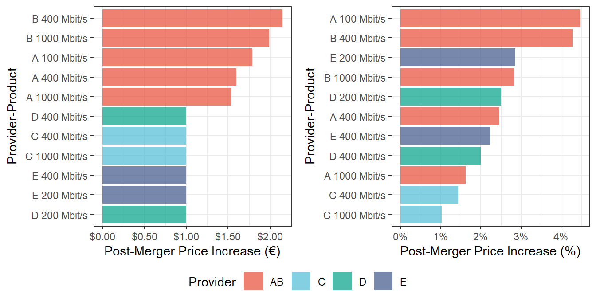
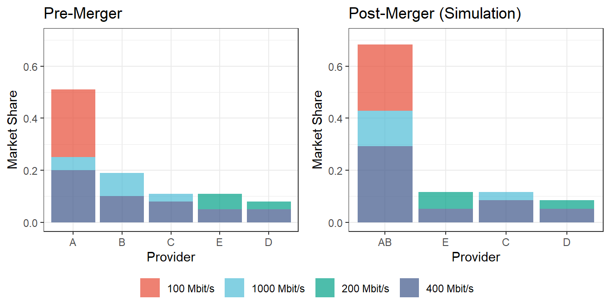

data <- data.frame(provider = c(rep("A", 3),
rep(LETTERS[seq(from = 2, to = 5)],
each = 2)),
product = c("100 Mbit/s",
rep(c("400 Mbit/s", "1000 Mbit/s"), 3),
rep(c("200 Mbit/s", "400 Mbit/s"), 2)),
price = c(40, 65, 95,#Provider A
50, 70, #Provider B
70, 98, #Provider C
40, 50, #Provider D
35, 45), #Provider E
share = c(0.26, 0.2, 0.05, #Provider A
0.1, 0.09, #Provider B
0.08, 0.03, #Provider C
0.03, 0.05, #Provider D
0.06, 0.05)) #Provider E
# We assume 9 million households, all of them have internet
M = 9e6
# Volume Quantity
data <- data %>% mutate(quantity = share*M)
# vectors of prices and quantities
QQ <- as.matrix(data$share*M)
PP <- as.matrix(data$price)Assessing merger competitive effects through merger simulation.
Let’s assume our industry concerns providers of broadband internet services. Some providers offer multiple products (e.g. multiple download speeds). In this case, the industry is best described by a heterogeneous Bertrand competition with 5 firms offering 11 products. Demand follows a simple logit model.
Providers A and B want to merge and we were asked to evaluate the effects of the merger. In this document, we will assess the potential anticompetitive effects that the proposed merger might carry.
1 The Market
We start by simulating the competitive structure of the market of broadband internet services.
1.1 Quantities and Prices
1.2 Demand
The consumer utility for product i:
U_i=V_i+\varepsilon_i
Where V_i is the observable part of the utility. We assume here that V_i takes the following form:
V_i= \delta_i -\alpha p_i+\text{asc}_i
We can rearrange the market in such that we end up with:
\ln s_i-\ln s_0 = \delta_i -\alpha p_i+\text{asc}_i
The price sensitivity is estimated to be -0.1.
alpha <- -0.1The logit demand contains alternative-specific constants (asc) that set the prediction equal to observed market shares. They can be found using the observed prices, quantities and the price sensitivity parameter (if the shares sum to 1, then no outside good is included and by default \delta_i is normalized to 0).
#intercepts are relative to reference (let's pick product 1)
data$asc <- log(data$share) - log(data$share[1]) -
alpha*(data$price - data$price[1])1.3 Firm Ownership
Table 1 presents the ownership matrix of which products belong to which providers.
2 Merger Assessment
The proposed transaction gives rise to an horizontal overlap between the Parties (A and B) regarding the supply of broadband internet services in the Netherlands at the retail level.
2.1 Relevant Market
To assess the potential competitive effects of the proposed merger, we will start by discussing briefly the relevant market.
As already mentioned, providers of internet usually offer multiple products with certain degree of differentiation. In particular, the various internet offerings with various speeds could be a plausible segmentation of the market for the retail provision of internet services. According to our data, the actual providers offers four different internet speeds: 100 Megabits per second (Mbps), 200 Mbps, 400 Mbps and 1000 Mbps.
In recent cases regarding the retail market for internet access, the Dutch competition agency, Authority for Consumers & Markets (ACM), had considered that a market segmentation based on download speeds is not appropriate, primarily because there is substitution both at the demand side and at the supply-side of the market (“Marktanalyse ontbundelde toegang“, 2015). In his view, “the fact that an internet connection, regardless of speed, can be used for the same applications, a distinction based on usage in the market for fixed internet access based on certain speeds is unlikely” (pp. 156-157).
The European Commission had followed the a similar approach by either disregarding the possibility of further market segmentation based on internet speed, or by considering it a “left open” issue (DGCOMP/Case M.7978, DGCOMP/Case M.5532, DGCOMP/Case M.6990).
As we will see, the quantitative analysis of elasticities and diversion ratios confirms the presence of relevant product substitution between different internet speeds, such that products with different speeds exert competitive pressure on each other.
Therefore, and also in line with previous European jurispudence, we will take the broadband of internet services as the product relevant market, without further distinctions based on internet speed. The geographic relevant market is at the national level.
2.2 Structural Analysis
Once defined the relevant market, we can now study their structure in terms of market concentration. The left-hand side of Figure 1 reports the pre-merger market shares measured in terms of units sold (quantity):

First, we observe a clear leadership of firm A in the market, with an overall market share of 51%. In contrast, the individual market shares of their rivals are between 11% and 19%, with firm B being the second largest provider of internet.
Note also that firm A is the only firm that still offers low-speed broadband services (100 Mbps), accounting for the 26% of the overall market. On the other hand, all providers participate on the “400 Mbps” segment. More to the point, the Parties (A and B) offers internet with speed of 400 Mbps and 1,000 Mbps, but do not offer 200 Mbps.
The right-hand side of Figure 1 plots the combined market share of the Parties.1 This figure suggests a plausible degree of dominance of the New Entity (AB) as a result of the merger, as the combined market share is now 70%.
According to Commission’s Guidelines on Horizontal Mergers (see Commission 2004), market shares of 50% or more might be evidence of the existence of a dominant market position. However, smaller competitors may act as a sufficient constraining influence if, for example, they have the ability and incentive to increase their supplies.
The overall concentration level in a market may also provide useful information about the competitive situation. Table 1 shows the overall concentration levels in terms of Herfindahl-Hirschman Index (HHI).
| HHI | Value |
|---|---|
| Pre-Merger | 3,268 |
| \Delta HHI | 1,938 |
| Post-Merger | 5,206 |
Table 1 also seems to suggest high market concentration (above 2,000).2 While these results give an initial indication of the competitive concern, further investigation is needed.
2.3 Unilateral Effects
We will now study the potential unilateral effects that may arise due to the merger. By removing one competitor from the market, the merger also reduces competitive constraints that in turn lead to price increases in the relevant market.
2.3.1 Price-Elasticities: Product Substitution
The price-elasticity matrix provides a good overview of the competitive pressure each product exerts to each other. On the one hand, both own and cross-elasticities allows us to understand the disciplinary pressure that firms A and B faces from their smaller rivals. On the other hand, elasticities give us information to assess closeness of competition between firm A and B. The underlying idea is that the closer competitors the merging parties are3, the more likely it is that a merger will give rise to significant unilateral effects.
We will write a function to calculate elasticities using the given data and price sensitivity. The assumptions underlying Logit demand imply that the probability that a consumer purchases product i is given by:
\Pr(U_{ij}>U_{ik})=s_i=\frac{\exp(V_i)}{\sum_{k} \exp(V_k)}
with V_i=\delta_i+\alpha p_i+\text{asc}_i (Berry 1994). The implies elasticities:
- The own-price elasticity for product i is defined by:
\epsilon_i^{i}=\alpha p_i(1-s_i)
- The cross-price elasticity for product i in reaction to change in price for product j:
\epsilon_j^{i}=-\alpha p_js_j
elast <- function(products, alpha) {
own <- alpha*products$price*(1-Pr)
cross <- -alpha*products$price %o% Pr
E <- cross
diag(E) <- own
return(E)
}Figure 2 shows the matrix of own and cross-price elasticities between the products involved in the relevant market:

Recall that when the cross elasticity of demand \epsilon_{ij} is greater than 1, the cross elasticity of demand is elastic: a change in price of product j results in a more than proportionate change in quantity demanded for product i.
From Figure 2 we can see high substitution between the Parties, specially from the products offered by B towards the products of A. For example, a 1% price increase in 400 Mbps internet offered by B increases by 1.3% the demand for 100 Mbps internet services of firm A. For the 1000 Mbps service offered by B, the demand increase is 2.45% towards firm A (100 Mbps). On the other hand, the elasticity from firm A towards B is less elastic (between 0.6 and 0.95 in the segments where they overlap).
Finally, it’s important to note that firm C (400 and 1000 Mbps) and to some extent D (200 and 400 Mbps) exerts quite an important competitive pressure on various of the products offered by A (100 Mbps and 400 Mbps). This implies that, even post-merger, there is still high competitive pressure coming from other products from rivals.
Therefore, we confirm the presence of high substitution across the different products of internet services.
3 Merger Simulation
With the given information about the industry, we will carry a merger simulation to better assess their potential competitive effects. To run the simulation we will need to define a number of functions. This is necessary as we search for solution across a very large range of possible input values. A function makes it possible to quickly generate correct output for any change in inputs.
3.1 Calibrate Marginal Costs
We will first calibrate the marginal costs.
#calculate elasticities
data$PCand <- data$price # candidate price is current price
data$s <- data$share # idem
elas <- elast(data, alpha)
#drop columns
data$PCand <- data$s <- NULL
#calculate matrix of marginal effects
part <- E*(QQ%*%t(1/PP))
#calculate implied marginal costs
CC <- PP + diag(own_pre)*solve(own_pre * part) %*% QQ3.2 First-Order Conditions (FOC)
Second, we define a function calculating the first order conditions. The function will give a vector corresponding to FOC value for each product. In equilibrium, we should get a vector of zeros.
The part calculating the matrix of marginal effects \dfrac{\partial Q_i}{\partial p_j} can be calculated by using the following relationship:
\epsilon_{ij}=\dfrac{\dfrac{\partial Q_i}{\partial p_j}}{\dfrac{Q_i}{p_j}}
FOC <- function(delta, products, EIG, C, M) {
products$PCand = products$price*delta
products$s = exp(products$asc +
alpha*products$PCand)/sum(exp(products$asc +
alpha*products$PCand))
#quantities
Q <- as.matrix(products$s*M)
#prices
P <- as.matrix(products$PCand)
#calculate elasticities
E <- elast(products, alpha)
#marginal effects
PART <- E*(Q%*%t(1/P))
#FOCs
thisFOC <- diag(EIG)*Q + (EIG * PART) %*% (P - C)
return(as.vector(thisFOC))
}All we need to do now is to adjust the ownership matrix to reflect the change in market structure due to the merger, as shown in Table 2 .
And we now solve the FOC’s with the new ownership structure with the following function:
#post-merger equilibrium
result <- BBsolve(rep(1, 11),
function(x){FOC(x,
products = data,
EIG = own_post,
C = CC,
M = M)}) Successful convergence.3.3 Post-Merger Effects
Table 3 reports the average price effects of the merger according to our simulation exercise. We observe that the the loss of a competitor in the relevant market due to the merger leads to a new equilibrium with higher prices on all products. In particular, we found a weighted average price effect4 of around 1.54 euros, that is, a 3 percentage point increase approximately relative to the pre-merger scenario. Figure 3 reports the post-merger effects of each product that resulted from our simulation:

Figure 3 shows that most of the price increase is primarily driven by the behavior of the New Entity. The simulation predicts a price-increase of around 4.5% for the 100 Mbps service offered by firm A and 4.3% for the 400 Mbps of firm B.
To put this in perspective, we can compare it to the results found in Grzybowski and Pereira (2007), were the authors carried a merger simulation in the Portuguese mobile telephony market. They found an average price increase of 7–10% without cost efficiencies. One firm could increase the price by as much as 13–22%.
According to these results, the competitive pressure exerted from rivals is not enough to prevent the New Entity to raise their prices. These results, though modest, suggests competitive risk in the relevant market.

Finally, we can also estimate the new market shares, as shown in Figure 4. Here we see that practically the same results found in our initial assessment based on simple combined market share between the Parties (Figure 1). Taken all into account, we conclude the existence of unilateral price effects on the relevant market.
4 Entry & Countervailing Factors
Our simulation has not take into account entry conditions and possible countervailing factors associated to the merger. One way to improve our analysis is to study barriers of entry and merger-specific efficiencies related to the proposed merger.
4.1 Entry Conditions
Typically, antitrust agencies evaluate whether entry will be likely, timely, and of sufficient magnitude as to discipline post-merger exercise of market power (see Commission 2004). When entering a market is sufficiently easy, a merger is unlikely to pose any significant anti-competitive risk.
Potential barriers to entry in the broadband internet market could be related to technical advantages that incumbents enjoy, for example, access to essential facilities (network infrastructure, local loops, etc.), which make it difficult for potential entrants to compete successfully. All these investments presents high sunk costs for entrants. This could also implies the presence of large economies of scale and scope, that may also constitute barriers to entry.
For example, in Xiao and Orazem (2011), the authors study the importance of sunk costs in determining entry conditions. In the conventional framework, entrants incur sunk costs to enter, while incumbents disregard these costs in deciding on continuation or exit. The authors apply this framework to study entry and competition in the local U.S. broadband markets and find that entry costs for early entrants are smaller than for later entrants, implying the existence of early mover advantages in this market. They also find that entry conditions for the 4th firm and subsequent entrants are stable. This implies that, once the market has between one to three incumbent firms, the fourth entrant has little effect on competitive conduct in the local broadband market.
There is also literature that suggests that mergers create new incentives on incumbents to actually create entry barriers in a profitable way. For example, Das Varma and De Stefano (2022) introduced the idea that entry deterrence is a public good amongst incumbents, having the incentive to free-ride on each other’s efforts to deter entry. According to authors, a merger between two incumbents eliminates free-riding between the merging firms, leading to an increase in post-merger investment in entry deterrence.
On the other hand, we need to recall that the relevant market in our case is at the retail level. Because of the unbundling regulation that generally applies in the network industries in the Netherlands (CPB, 2005), new entrants can compete with incumbents (such as KPN) on the market for service provision without needing to invest in the essential network facilities. In this case, unbundling means that other firms have access to the local loop, which requires incumbents to allow competitors to install their own equipment on both sides of the loop to provide their own services (CPB, 2005).
This is an important factor to consider when assessing entry barriers in the market of broadband internet services, as it would mean lower barriers for entrants in the services market or retail market. An interesting aspect to analyze is whether cable network providers can provide easy access to their connections or if other technical or compatibility barriers still exist.
4.2 Efficiency Claims
Its likely that the Parties had presented efficiencies that may counteract the effects on competition and in particular the potential harm to consumers that it might otherwise have. According to the Guidelines, for the Commission to take account of efficiency claims, the efficiencies have to benefit consumers, be merger-specific and be verifiable. These conditions are cumulative.
Some theoretical research on the effects of mergers in the telecommunications industry has found the presence of relevant cost-reduction efficiencies. For example, Houngbonon and Jeanjean (2019) studied mobile internet traffic from 18 European markets and found that consumer surplus is maximized in generally markets with 3 symmetric operators. They also suggested that, in mobile mergers, dynamic efficiencies from investment outweigh static efficiencies from market power (except in the case of “3-to-2 mergers”).
A useful way to take efficiencies into account is to incorporate them in our merger simulation model. For example, in Grzybowski and Pereira (2007), the authors simulated the post-merger effects of the Portuguese mobile telephony market and considered three scenarios: (i) there are no cost efficiencies, (ii) a 5% marginal cost reduction in the costs of the Parties, and (iii) a 10% reduction. On average, the authors found price increases of about 6–10% with a 10% marginal cost reduction.
According the Taragin and Sandfort (2012), we can update our model to evaluate these efficiencies in two different ways. First, when computing the post-merger equilibrium prices, we can insert post-merger marginal costs by multiplying pre-merger marginal costs with the claimed proportional reduction in marginal costs, 1+\Delta mc (“mcDelta”).
Second, we can compute the compensating marginal cost reduction (CMCR) on the merging parties’ products. CMCR is the percentage decrease in the marginal costs of the merging parties’ products necessary to prevent a post-merger price increase (Miller and Sheu 2021). For the Bertrand case, the matrix formula of the compensating marginal cost reduction, expressed as a percentage of pre-merger costs, is:
\text{CMCR}= (m_{\text{post}}-m_{\text{pre}}) \circ \frac{1}{1-m_{\text{pre}}}
5 Final Decision
We observe that the the loss of a competitor in the relevant market due to the merger leads to 3 percentage point increase approximately relative to the pre-merger scenario. Are these effects really significant? The US Horizontal Merger Guidelines (2010) indicates that a merger is unlikely to raise significant unilateral effects concerns if the Gross Upward Pricing Pressure Index (GUPPI) is proportionately small. In practice, that amount is often considered to be less than 5%. Bhattacharya, Illanes and Stillerman (2023) found that competition agencies challenge mergers they expect would increase average prices more than 8–9% . Even though moving to a 5% threshold would reduce aggregate price increases by about 1 percentage point, this threshold would lead to significantly higher administrative burden, nearly tripling the number of mergers the agencies must challenge.
In either case, these findings suggest that the simulated effects are too low to raise competitive concerns. Furthermore, these results do not account for potential pro-competitive effects, such as cost-reduction efficiencies, which could offset any negative impacts.
Therefore, we would not prohibit this merger.
References
Berry, Steven T. 1994. “Estimating Discrete-Choice Models of Product Differentiation.” The RAND Journal of Economics 25 (2): 242. https://doi.org/10.2307/2555829.
Commission, European. 2004. “Guidelines on the Assessment of Horizontal Mergers Under the Council Regulation on the Control of Concentrations Between Undertakings.” Official Journal of the European Union 100: 5–18.
Das Varma, Gopal, and Martino De Stefano. 2022. “Entry Deterrence, Concentration, and Merger Policy.” Review of Industrial Organization 61 (2): 199–222. https://doi.org/10.1007/s11151-022-09865-y.
Grzybowski, Lukasz, and Pedro Pereira. 2007. “Merger Simulation in Mobile Telephony in Portugal.” Review of Industrial Organization 31 (3): 205–20. https://doi.org/10.1007/s11151-008-9155-2.
Houngbonon, Georges V., and Francois Jeanjean. 2019. “Investment and Market Power in Mobile Mergers.” Journal of Industrial and Business Economics 46 (1): 65–81. https://doi.org/10.1007/s40812-019-00110-4.
Miller, Nathan H., and Gloria Sheu. 2021. “Quantitative Methods for Evaluating the Unilateral Effects of Mergers.” Review of Industrial Organization 58 (1): 143–77. https://doi.org/10.1007/s11151-020-09805-8.
Taragin, Charles, and Michael Sandfort. 2012. “The Antitrust Package.”
Xiao, Mo, and Peter F. Orazem. 2011. “Does the Fourth Entrant Make Any Difference?” International Journal of Industrial Organization 29 (5): 547–61. https://doi.org/10.1016/j.ijindorg.2010.11.005.
Appendix
Alternative Elasticity Function
Another way to calculate the elasticities is to just plug-in the market shares s_i into the formula in the following way:
elast1 <- function(products, alpha) {
own <- alpha*products$price*(1-products$share)
cross <- -alpha*products$price %o% products$share
E <- cross
diag(E) <- own
return(E)
}Footnotes
As in current practice, post-merger market shares are calculated on the assumption that the post-merger combined market share of the merging parties is the sum of their pre-merger market shares.↩︎
As stated in the Guidelines, the Commission is unlikely to identify horizontal competition concerns in a merger with a post-merger HHI between 1000 and 2000 and a delta below 250, or a merger with a post-merger HHI above 2000 and a delta below 150↩︎
Closeness of competition is defined with reference to the propensity of the customers of one of the merging parties to switch to products supplied by the other merging party. The greater that propensity, the closer competitors the two firms are said to be. See paragraph 28, EC Merger Guidelines.↩︎
The product-price effects are averaged using the post-merger market shares as weights.↩︎